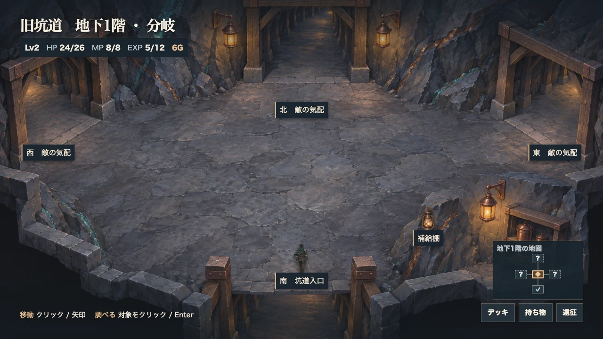
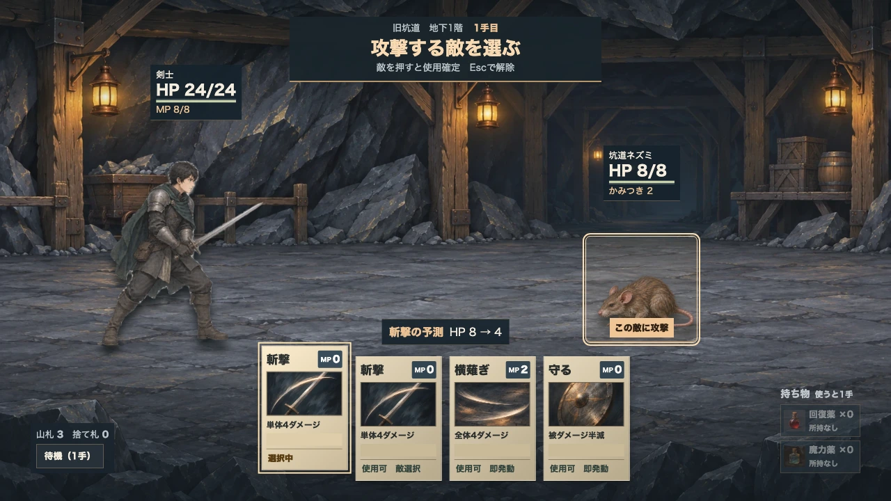
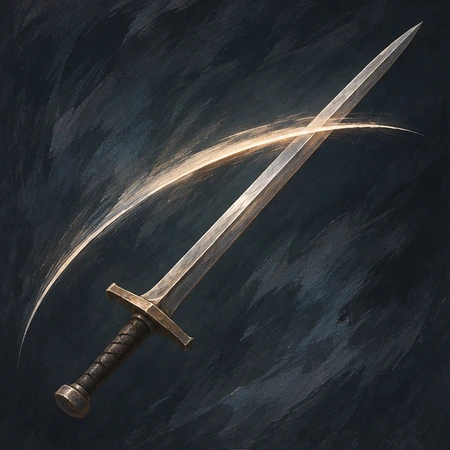
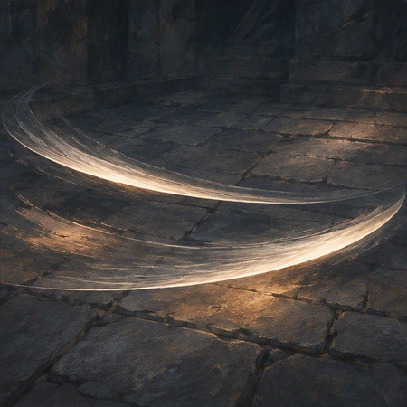
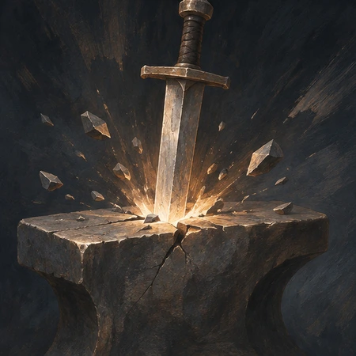
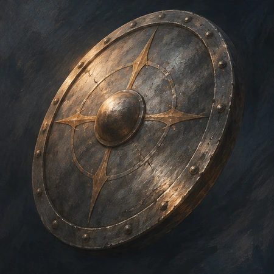
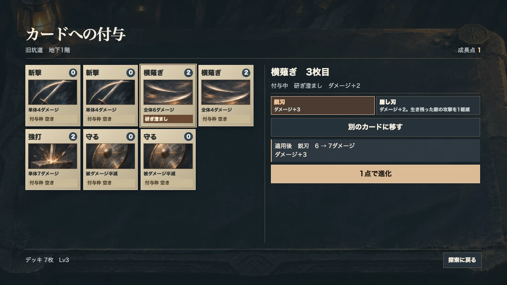
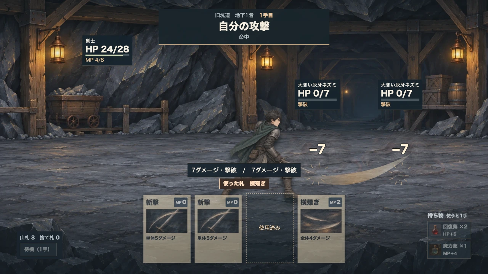

探索とカード戦闘のターン制RPG
黎明の迷宮
迷宮を歩き、手札で戦う。
育てた一枚で、次の部屋を突破する。
街の明かりを支える炉が止まった。剣士は灯りを取り戻すため、旧坑道へ降りる。
一戦で得たものが、次の一手を変える
次の敵を見て装備やカードを育て、使って手応えを確かめる。その繰り返しが遊びの中心です。
- 歩いて見つける
敵の気配、宝箱、補給場所を探す。
- 手札で戦う
敵の予告を見て札を選び、勝って経験値と戦利品を得る。
- 装備と札を育てる
剣士に装備を着け、成長点で札一枚に効果を付ける。
- 奥へ試しに行く
強くした札や新しい装備で、次の敵を攻略する。
試作版の目標 旧坑道の地下1階・7部屋を探索し、Lv3に到達する。新しい装備を身につけ、進化した札を使った戦闘に勝つと「探索の成果」が表示されます。
扉の先を見て、進む道を選ぶ
入口の敵を倒すと分岐に出ます。各通路は同じ階の中でつながっているので、補給棚や取り残した宝箱へ戻れます。

分岐から進める場所
- 西
- 灰牙ネズミの運搬路。勝つと鉄剣を拾え、奥の工具置場へ行けます。
- 東
- 坑道コウモリの水抜き路。勝つと革鎧を拾え、奥の備品庫へ行けます。
- 北
- 大きな灰牙ネズミが2体いる奥の広間。育てた札を試せます。
移動と調査
床をクリック、または 矢印キー／WASD で歩きます。扉や敵をクリックすると近づいて調べます。キーボードでは対象のそばで Enter。
探索中の準備
「デッキ」で札の付与・進化、「持ち物」で薬や装備を使えます。HPとMPは戦闘を終えても持ち越します。補給棚で回復薬を4G、魔力薬を6Gで買えます。
敵の次の行動を見て、手札から一枚
デッキは7枚、開幕の手札は4枚。頭上の攻撃予告と残りMPを見て、自分の手番に何をするか決めます。

カードを使う順番
- 選ぶ 斬撃・強打は札を押し、続けて敵を押すと確定。横薙ぎ・守るは札を押すと発動します。
- 解決する 使う札が消え、攻撃や防御が発生。生き残った敵が予告した行動を取ります。敵を全員倒せばその場で勝利です。
- 補充する 使った札は捨て札に入り、空いた場所に山札から1枚入ります。山札が尽きると捨て札を混ぜ直します。
MPが足りない札には不足量が出ます。「待機」は札を1枚捨てて1手進めます。戦闘中に薬を飲む場合も1手で、手札はそのままです。
最初のデッキ

斬撃 ×2敵1体に4ダメージ · MP0
横薙ぎ ×2敵全体に各4ダメージ · MP2
強打 ×1敵1体に7ダメージ · MP2
守る ×2この手の被ダメージを1発ずつ半減 · MP0
剣士の装備と、カード一枚の進化
拾った武器・防具は「持ち物」で剣士に一つずつ装備します。「デッキ」では、レベルアップで得た成長点を使って札一枚にスキルを付けます。
武器を替える
鉄剣は2枚の斬撃を各4から5ダメージに。大槌は強打を7から9ダメージにします。
防具を替える
革鎧は毎手の初めの被ダメージを1軽減。厚布の外套は各戦闘の初めの被ダメージを2軽減します。
成長点1点で付与、もう1点で進化
累計EXP5でLv2、12でLv3。各レベルで最大HPと現在HPが2増え、成長点を1点得ます。同じ横薙ぎが2枚あっても、付与が効くのは選んだ一枚です。取得済みの効果は、探索中に対応する別の札の空き枠へ移せます。

研ぎ澄まし
攻撃カードのダメージ＋2。
鋭刃
ダメージ＋3に伸びる。
崩し刃
＋2を保ち、命中後に残った敵の次の攻撃を1弱める。
節約
攻撃カードの消費MPを1減らす。最低MP1。
先手の節約
その戦闘で最初に使うときだけMP0。以後は節約。
魔力回収
節約を保ち、その札で敵を倒すとMP1回復。複数倒しても一度。
押し返し
守った手で被弾して生き残ると、その敵に2ダメージ。1手に一度。
強反撃
反撃が4ダメージになる。
堅守
防具まで計算したあとに残る最初の被ダメージを1軽減。実際にHPが減った攻撃には2ダメージを返す。
初めてなら、横薙ぎを一枚育ててみる
小型の敵が並ぶ坑道では、横薙ぎを何ダメージにできるかが、そのまま次の一手の違いになります。
- 入口でLv2へ 坑道ネズミを斬撃2回で倒し、成長点を横薙ぎの「研ぎ澄まし」に使う。
- 西の運搬路で使う 育てた横薙ぎは全体6ダメージ。引けたらHP6の敵2体を一手で倒せる。勝つと鉄剣が手に入り、Lv3へ。
- 奥へ備える 鉄剣を装備し、同じ横薙ぎを「鋭刃」に進化。北の奥の広間では、HP7の敵2体を各7ダメージで仕留められる。

途中の戦闘では引いた手札に合わせて進めます。欲しい札を待つ間は、守る、通常攻撃、薬、待機を使えます。